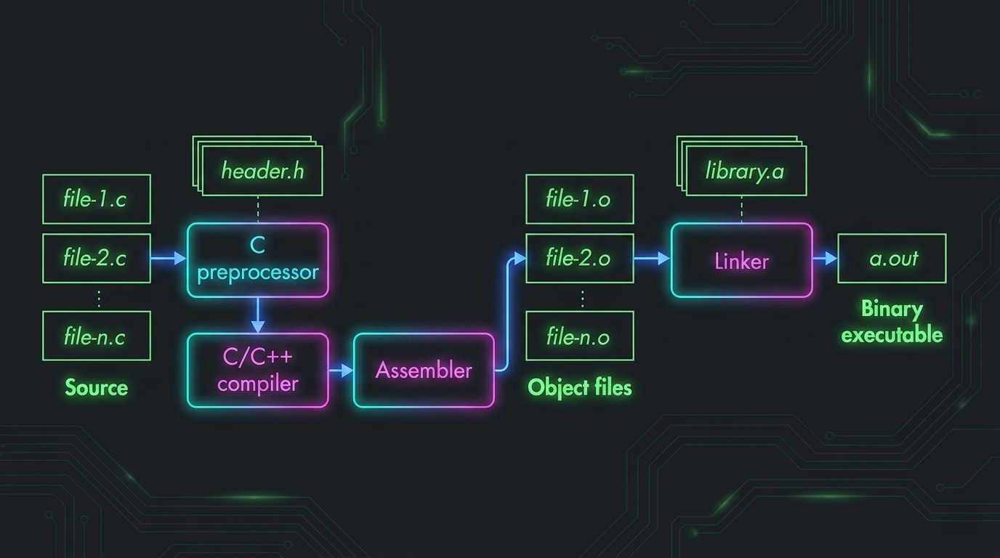

# ── preprocessing ────────────────────────────────────────────────
gcc -E -P # -E stop after cpp
# -P omit line markers (# directives)
# ── compilation ──────────────────────────────────────────────────
gcc -S -masm=intel # -S emit .s, stop before assembly
# -masm=intel Intel syntax (≠ AT&T default)
# ── assembly ─────────────────────────────────────────────────────
gcc -c # compile + assemble → relocatable .o, no link
# ── full pipeline ────────────────────────────────────────────────
gcc -o binary # dynamically linked executable (default)
gcc -o binary -static # statically linked, all deps embedded file # ELF type + arch: relocatable / executable / shared object
readelf --syms # symbol table (long form of -s)
readelf -r # relocation entries: what the linker must patch and how
objdump -M intel -d # disassemble (Intel syntax)
objdump -sj .rodata # hex+ascii dump of .rodata section
strip --strip-all # remove .symtab/.strtab (runtime keeps .dynsym) 
cpp expands #include, #define, and conditionals
into a single translation unit of pure C — no directives remain in the output.
Token pasting (##), stringification (#), and predefined macros
(__FILE__, __LINE__, __COUNTER__) are resolved here,
before any type-checking or code generation occurs.
GCC lowers the translation unit through its internal IR (GIMPLE → RTL) to architecture-specific assembly.
The optimization level is the critical variable for reverse engineering:
-O0 emits a nearly 1:1 mapping to the C source — every variable on the stack,
every expression a separate instruction.
From -O2 up, the compiler inlines aggressively, eliminates dead branches, unrolls loops,
and can merge or reorder functions entirely, breaking the structural correspondence you’d expect.
Symbolic labels are still present in the .s output regardless of level.
as translates mnemonics to opcodes and produces a relocatable ELF object (.o).
External references have no resolved address yet — recorded as relocation entries in
.rela.text (RELA on x86-64: offset + type + symbol + addend),
pointing the linker at every site that needs patching.
file reports the output as ELF 64-bit LSB relocatable;
a shared library built with -fPIC -shared comes out as shared object —
position-independent, no fixed load address.
Key sections in a .o:
.text.data.bss.rodataobjdump -sj .rodata.symtab / .strtab.dynsymstrip --strip-all
ld (invoked by gcc) consumes all .o files and library inputs,
resolves every relocation entry, assigns final virtual addresses, and emits the executable ELF.
Static -static — merges all
.text / .data / … sections from .o files
and .a archives, resolves all relocations to absolute addresses.
Fully self-contained — no PT_INTERP, no PLT indirection, direct calls.
Larger binary (carries full libc), but no runtime dependency surprises; preferred for forensics and sandboxed environments.
Dynamic (default) — external symbols stay UNDEF in
.dynsym. A PT_INTERP segment names the runtime linker
(/lib64/ld-linux-x86-64.so.2), which maps the needed .sos and resolves symbols
at load time — or lazily on first call via PLT/GOT: each external call goes through a PLT stub
that on first invocation falls through to the resolver, patches the GOT entry with the real address;
subsequent calls jump through the GOT directly.
LTO -flto — defers optimization to link time.
GCC stores GIMPLE IR in object files instead of machine code; ld then runs a second
optimization pass across all translation units simultaneously, enabling cross-TU inlining and dead
function elimination. From a RE perspective, LTO-built binaries have no function-level correspondence
to source files, and aggressively inlined code makes CFG reconstruction significantly harder.
ldd ./binary # runtime shared lib dependencies
readelf -d ./binary | grep NEEDED # required .so from ELF dynamic section
readelf -W --syms ./binary | grep UNDEF # symbols resolved at runtime by ld.so
objdump -M intel -d ./binary # disassemble: external calls appear as plt@FUNC
strip --strip-all ./binary # remove .symtab/.strtab (keeps .dynsym)
After strip --strip-all, function names and local symbols are gone — only
the exports and imports the dynamic linker depends on remain. CFG recovery falls back to heuristics:
function prologue patterns, cross-reference analysis, and section boundary detection.
ELF + DWARF — debug info embedded directly as dedicated sections
(.debug_info, .debug_line,
.debug_abbrev, …).
strip --strip-debug removes these without touching the symbol table;
strip --strip-all removes both. Shipped ELF binaries are typically fully stripped.
PE + PDB — Windows uses a separate PDB (Program Database) file linked to the binary
via a GUID in IMAGE_DEBUG_DIRECTORY. The binary carries almost no debug info itself —
the PDB is rarely shipped, making it absent for most RE work unless indexed by a symbol server (symsrv).
Write a C program that contains several functions and compile it into an assembly file, an object file, and an executable binary, respectively. Try to locate the functions you wrote in the assembly file and in the disassembled object file and executable. Can you see the correspondence between the C code and the assembly code? Finally, strip the executable and try to identify the functions again.
solution#include <stdlib.h>
#include <stdio.h>
float multiply(float a, float b) { return a *= b; }
float divide(float a, float b) { return a /= b; }
void show(char* str) { printf("%s\n", str); }
int main(int argc, char* argv[]) {
printf("%s\n", "hello!");
show("World");
float c = multiply(divide(4.0, 2.0), 5.0);
printf("%f\n", c);
return 0;
}gcc -S -masm=intel locatingfunctions.c # → .s labels are plain text in the source
gcc -c locatingfunctions.c # → .o external calls show as 0x0 + reloc entry
gcc locatingfunctions.c -o a.out # → executable, symbols intact
strip --strip-all a.out -o a2.out # → stripped copyIn the .s file, function names appear as plain assembly labels
(multiply:, divide:, …) — they are source text.
In the .o, they are symbol table entries; calls to external functions show address
0x0 with a relocation entry pointing the linker at the call site.
In the linked binary, all relocations are resolved to final virtual addresses.
0000000000001149 <multiply>:
1149: 55 push rbp
114a: 48 89 e5 mov rbp,rsp
114d: f3 0f 11 45 fc movss DWORD PTR [rbp-0x4],xmm0 ; spill a (-O0)
1152: f3 0f 11 4d f8 movss DWORD PTR [rbp-0x8],xmm1 ; spill b
1157: f3 0f 10 45 fc movss xmm0,DWORD PTR [rbp-0x4] ; reload a
115c: f3 0f 59 45 f8 mulss xmm0,DWORD PTR [rbp-0x8] ; xmm0 = a * b
1161: f3 0f 11 45 fc movss DWORD PTR [rbp-0x4],xmm0 ; store result
1166: f3 0f 10 45 fc movss xmm0,DWORD PTR [rbp-0x4] ; reload for return
116b: 5d pop rbp
116c: c3 ret
000000000000116d <divide>: ; identical structure, divss instead of mulss
...
1180: f3 0f 5e 45 f8 divss xmm0,DWORD PTR [rbp-0x8]
...
1190: c3 ret
0000000000001191 <show>:
...
11a4: e8 87 fe ff ff call 1030 <puts@plt> ; printf("%s\n") → puts
11ab: c3 ret
00000000000011ac <main>:
...
11c5: e8 66 fe ff ff call 1030 <puts@plt> ; printf("%s\n","hello!") → puts
11d4: e8 b8 ff ff ff call 1191 <show>
11eb: e8 7d ff ff ff call 116d <divide>
1200: e8 44 ff ff ff call 1149 <multiply>
122e: e8 0d fe ff ff call 1040 <printf@plt> ; %f needs real printfxmm0, xmm1 (not the integer registers rdi/rsi).
Operations are scalar single-precision SSE: movss (move), mulss (multiply), divss (divide).
At -O0, GCC spills every argument to the stack then reloads it — the four
movss around mulss are pure overhead. From -O1+,
the compiler keeps values in registers and the entire function collapses to a single mulss xmm0, xmm1 / ret.
printf("%s\n", "hello!") in main and printf("%s\n", str)
in show compile to puts@plt calls — GCC recognizes a single %s\n
with no other conversion as equivalent to puts, which appends the newline itself and avoids
format-string parsing overhead. The final printf("%f\n", c) cannot be simplified and
stays as printf@plt.
0000000000001030 <puts@plt>:
1030: ff 25 ca 2f 00 00 jmp QWORD PTR [rip+0x2fca] ; jump through GOT slot
1036: 68 00 00 00 00 push 0x0 ; reloc index for resolver
103b: e9 e0 ff ff ff jmp 1020 <puts@plt-0x10> ; → ld.so resolver
; First call: GOT slot → resolver → patches GOT with real puts address
; All subsequent calls: GOT slot → libc puts directly (no resolver overhead)puts@plt at 0x1030 is not puts — it is the trampoline.
The jmp [GOT] on the first call lands back into the resolver stub (push + jmp to 0x1020),
which calls ld.so to look up the real address and write it into the GOT entry.
Every subsequent call jumps through the now-patched GOT slot directly into libc.
This is visible in objdump: external calls annotated as @plt — a sign the call
goes through this indirection layer.
_start at 0x1050, injected by the CRT linker script.
It zero-initialises rbp, extracts argc/argv from the stack,
and calls __libc_start_main (via GOT), which runs global constructors and eventually calls main.
The endbr64 prefix marks _start as a valid CET indirect-branch target —
the dynamic linker jumps to it indirectly. User functions called only directly do not carry endbr64.
After strip --strip-all, the entire .text section
becomes one anonymous blob. No function labels — only PLT entries (from .dynsym)
and ELF section names survive. Calls that previously referenced named symbols now reference
offsets relative to the nearest surviving symbol:
; ── non-stripped ────────────────────────────────────
0000000000001149 <multiply>: ; function label present
11d4: e8 b8 ff ff ff call 1191 <show>
11eb: e8 7d ff ff ff call 116d <divide>
1200: e8 44 ff ff ff call 1149 <multiply>
; ── stripped ─────────────────────────────────────────
0000000000001050 <.text>: ; entire section = one blob, no function labels
11d4: e8 b8 ff ff ff call 1191 <printf@plt+0x151> ; was: <show>
11eb: e8 7d ff ff ff call 116d <printf@plt+0x12d> ; was: <divide>
1200: e8 44 ff ff ff call 1149 <printf@plt+0x109> ; was: <multiply>
; opcodes are byte-for-byte identical — only the annotations differpush rbp / mov rbp, rsp appears at 0x1149, 0x116d,
0x1191, 0x11ac — exactly the four user functions.
Ends are found at ret (0x116c, 0x1190, 0x11ab, 0x1239).
Automated disassemblers (Ghidra, IDA Pro) use exactly this heuristic — function prologue scanning
plus cross-reference analysis from known call sites — to reconstruct the full call graph
without a single symbol.
As you've seen, ELF binaries (and other types of binaries) are divided into sections. Some sections contain code, and others contain data. Why do you think the distinction between code and data sections exists? How do you think the loading process differs for code and data sections? Is it necessary to copy all sections into memory when a binary is loaded for execution?